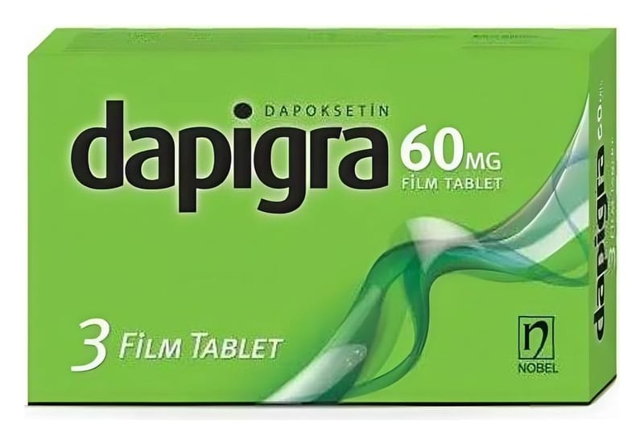

Dapigra 60 mg Film Tablet ,3 Film Tablet

Ne için kullanılır
KT · Bölüm 1- DAPİGRA’nın 60 mg’lık tabletleri; gri renkli, yuvarlak, bir yüzünde “60” baskısı diğer yüzünde çentiği olan film tabletlerdir. - DAPİGRA, 18-64 yaşları arasındaki erkeklerde eşleriyle cinsel ilişkisini etkileyecek şekilde sık görülen erken boşalma (prematür ejakülasyon) durumunun tedavisinde kullanılan bir ilaçtır. - DAPİGRA etkin madde olarak dapoksetin içerir. Bu seçici serotonin geri alım inhibitörü (SSRI) olarak adlandırılan ve diğer ürolojik ilaçlar olarak adlandırılan gruba dahil bir ilaçtır. - DAPİGRA sizin boşalmanıza kadar geçen süreyi uzatır; boşalmayı kontrol edebilmenizi sağlar. Bu sizin hızlı boşalmanızdan dolayı olan hayal kırıklığı ve sıkıntılarınızı azaltır.